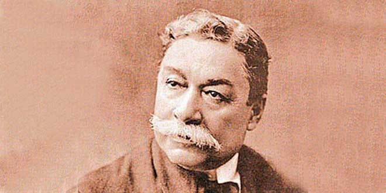

BIOGRAFÍA DE DON FEDERICO VILLARREAL
BIOGRAFÍA DE DON FEDERICO VILLARREAL|
 Nuestro sabio epónimo nació en Túcume, Lambayeque, el 30 de agosto del 1850. Sus padres fueron Ruperto Villarreal y Manuela Villarreal. Su vocación por las ciencias exactas le permitió que a los 23 años superara el Binomio de Newton, graduándose luego como preceptor de segunda enseñanza, a los 26 años. En 1877 viaja a Lima e ingresa a la Facultad de Ciencias de la Universidad Nacional Mayor de San Marcos, destacando por su dedicación al estudio. Obtuvo su grado de bachiller en el año 1879 con la tesis “Formulas y métodos que deben complementarse en matemática pura” y en 1880; la licenciatura, con su tesis “El efecto de refracción sobre el disco de los astros”. En 1881 fue el primer doctor en matemática por la tesis “Clasificación de las curvas de tercer grado”. Al producirse la Guerra del Pacífico en 1879, se alista en las filas de los defensores de la patria. Pelea en la Batalla del Morro de Chorrillos y cae herido de cuidado en los campos de San Juan y Miraflores. A los 31 años postuló a la Escuela de Ingenieros (hoy Universidad Nacional de Ingeniería), alternando el dictado de la cátedra universitaria con sus clases. Durante los años 1886 y 1887 obtiene los títulos de Ingeniero Civil e Ingeniero de Minas. Desde su primera publicación “Efecto de la refracción sobre el disco de los astros”, en febrero de 1885 en la Gaceta Científica, hasta su muerte escribiría cerca de 600 notas de interés científico. En 1882 fue elegido senador suplente por el Colegio Electoral de Lambayeque y en 1900, concejal de Lima. En ese mismo año, Federico Villarreal inicia su dedicada actividad a la difusión del *Esperanto. En 1903 edita la única revista de este tipo en el Perú “Anteneun esperantisoy” que dirigió y sostuvo económicamente hasta su muerte. El Sabio Federico Villarreal murió en Barranco, el 3 de junio de 1923, rindiéndosele honores póstumos correspondientes a la categoría de ministro de Estado. A solicitud fe las autoridades de Túcume, los restos de quien es considerado uno de los hombres más brillantes del Perú, fueron exhumados y trasladados a su tierra natal el 29 de agosto de 1998. *Esperanto: Idioma creado por el doctor L. Zamenhof en 1887, cuyo seudónimo era Esperanto, con idea de que pusiese servir como lengua universal. |